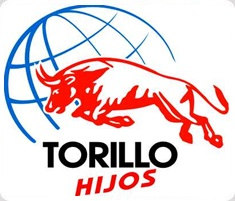

Empresa 100% mexicana
-
Grupo Industrial Torillo Hijos S.A. de C.V.
Empresa 100% mexicana dedicada a la fabricación y comercialización de herramientas de mano metálicas sin motor. Con más de 75 años en el mercado de industria Metalmecánica. Ubicada C. Febrero de 1917 SN, Zona Industrial Chalco, Estado de México, México, CP. 56600.
Emplea alrededor de 51 a 100 personas. Esta registrada en la base de datos desde JULIO 2010; esta empresa se clasifica dentro del sector 332.
Torillo
-

SECTOR 332
Fabricación de productos metálicos que agrupa unidades económicas dedicadas principalmente a la fabricación de productos forjados y troquelados a partir de metal comprado; herramientas de mano metálicas sin motor y utensilios de cocina metálicos; partes y estructuras metálicas de hierro y acero para la construcción y productos de herrería; calderas industriales, tanques y envases metálicos; herrajes y cerraduras; alambre, productos de alambre y resortes. Al maquinado hecho sobre pedido de piezas metálicas nuevas y usadas para maquinaria y equipo en general; a la fabricación de tornillos, tuercas, remaches y similares; el recubrimiento de piezas metálicas y otros terminados metálicos, y a la fabricación de otros productos metálicos.
Incluye también: u.e.d.p a la fabricación de productos mediante pulvimetalurgia, y productos moldeados por rodillos de compresión, hechos a petición del cliente; a la fabricación de estructuras metálicas combinada con la instalación en el lugar de la construcción; a la fabricación de mecanismos para cerraduras de cajas fuertes, y al recubrimiento de piezas metálicas combinado con el recubrimiento de piezas metálicas. Excluye: u.e.d.p. al montaje de estructuras de acero prefabricadas; a la instalaci+on o realización de trabajos de herrería en lugar de la construcción.
238- Trabajos especializados para la construcción
Al recubrimiento de productos de madera con pintura, plástico y otros materiales
321-Insutria de la madera
De productos de plástico con diversos materiales
326-Insutria de plástico y del hule
A la fundición primaria integrada con la fabricación de productos terminados realizados en complejos siderúrgicos.
331-Insutrias metálicas básicas
A la fabricación de calentadores industriales de agua, de calderas de calefacción central.
333-Fabricación de maquinaria y equipo
De cerraduras de tiempo 334-Fabricación de equipo de computación, comunicación, medición, y de otros equipos, componentes y accesorios electrónicos.
De calentadores de agua de uso doméstico; de alambres y cables para conducir electricidad. 335-Fabricación de accesorios, aparatos eléctronicos y equipo de generación de energía eléctrica
De piezas metálicas troqueladas para vehículos automotrices; a la reconstrucción en serie de partes de motores de automóviles y camiones.
336- Fabricación de equipo de transporte
A la fabricación de cuchillería de mesa de metales preciosos; a al acuñación de monedas e impresión de papel moneda; al chapeado con metales preciosos de articulos de joyería; a la elaboración de orfebrería y joyería de metales preciosos.
339-Otras industrias manufactureras
A los servicios de cerrajería de alta seguridad.
561- Servicios de apoyo a los negocios
A la rectificación de partes de motor de automóviles y camiones a petición del cliente, y a obtener duplicados de llaves.
811- Servicios de reparación y mantenimiento

Fabricación de productos metálicos que agrupa unidades económicas dedicadas principalmente a la fabricación de productos forjados y troquelados a partir de metal comprado; herramientas de mano metálicas sin motor y utensilios de cocina metálicos; partes y estructuras metálicas de hierro y acero para la construcción y productos de herrería; calderas industriales, tanques y envases metálicos; herrajes y cerraduras; alambre, productos de alambre y resortes. Al maquinado hecho sobre pedido de piezas metálicas nuevas y usadas para maquinaria y equipo en general; a la fabricación de tornillos, tuercas, remaches y similares; el recubrimiento de piezas metálicas y otros terminados metálicos, y a la fabricación de otros productos metálicos.
Incluye también: u.e.d.p a la fabricación de productos mediante pulvimetalurgia, y productos moldeados por rodillos de compresión, hechos a petición del cliente; a la fabricación de estructuras metálicas combinada con la instalación en el lugar de la construcción; a la fabricación de mecanismos para cerraduras de cajas fuertes, y al recubrimiento de piezas metálicas combinado con el recubrimiento de piezas metálicas. Excluye: u.e.d.p. al montaje de estructuras de acero prefabricadas; a la instalaci+on o realización de trabajos de herrería en lugar de la construcción.
238- Trabajos especializados para la construcción
Al recubrimiento de productos de madera con pintura, plástico y otros materiales
321-Insutria de la madera
De productos de plástico con diversos materiales
326-Insutria de plástico y del hule
A la fundición primaria integrada con la fabricación de productos terminados realizados en complejos siderúrgicos.
331-Insutrias metálicas básicas
A la fabricación de calentadores industriales de agua, de calderas de calefacción central.
333-Fabricación de maquinaria y equipo
De cerraduras de tiempo 334-Fabricación de equipo de computación, comunicación, medición, y de otros equipos, componentes y accesorios electrónicos.
De calentadores de agua de uso doméstico; de alambres y cables para conducir electricidad. 335-Fabricación de accesorios, aparatos eléctronicos y equipo de generación de energía eléctrica
De piezas metálicas troqueladas para vehículos automotrices; a la reconstrucción en serie de partes de motores de automóviles y camiones.
336- Fabricación de equipo de transporte
A la fabricación de cuchillería de mesa de metales preciosos; a al acuñación de monedas e impresión de papel moneda; al chapeado con metales preciosos de articulos de joyería; a la elaboración de orfebrería y joyería de metales preciosos.
339-Otras industrias manufactureras
A los servicios de cerrajería de alta seguridad.
561- Servicios de apoyo a los negocios
A la rectificación de partes de motor de automóviles y camiones a petición del cliente, y a obtener duplicados de llaves.
811- Servicios de reparación y mantenimiento

 Más de 60 años han transcurrido desde la fundación de grupo Industrial Torillo Hijos, S.A. de C.V., años de reto, competitividad y creatividad.
Más de 60 años han transcurrido desde la fundación de grupo Industrial Torillo Hijos, S.A. de C.V., años de reto, competitividad y creatividad.